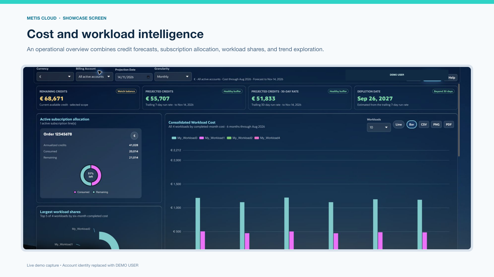
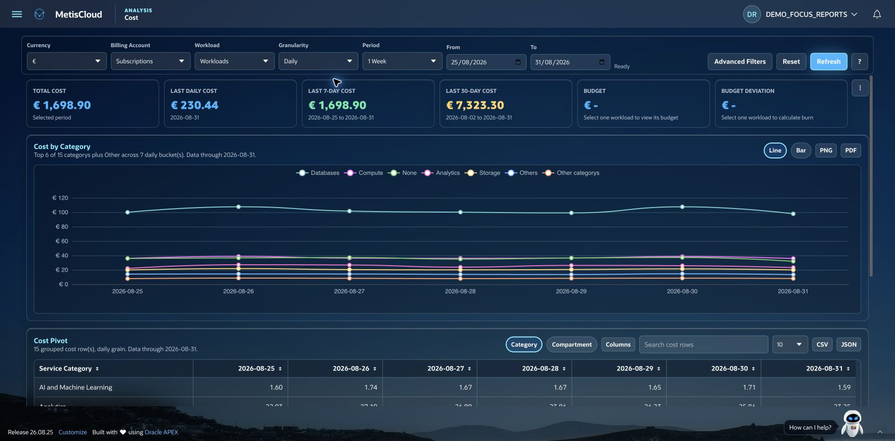
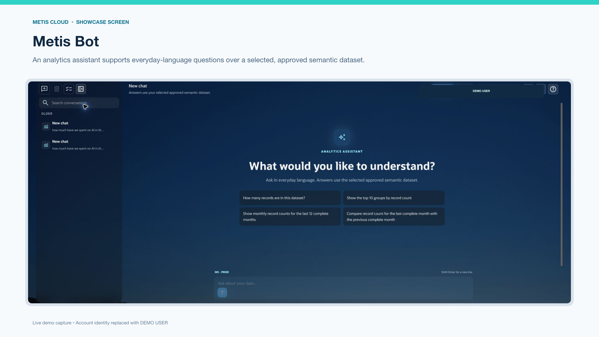
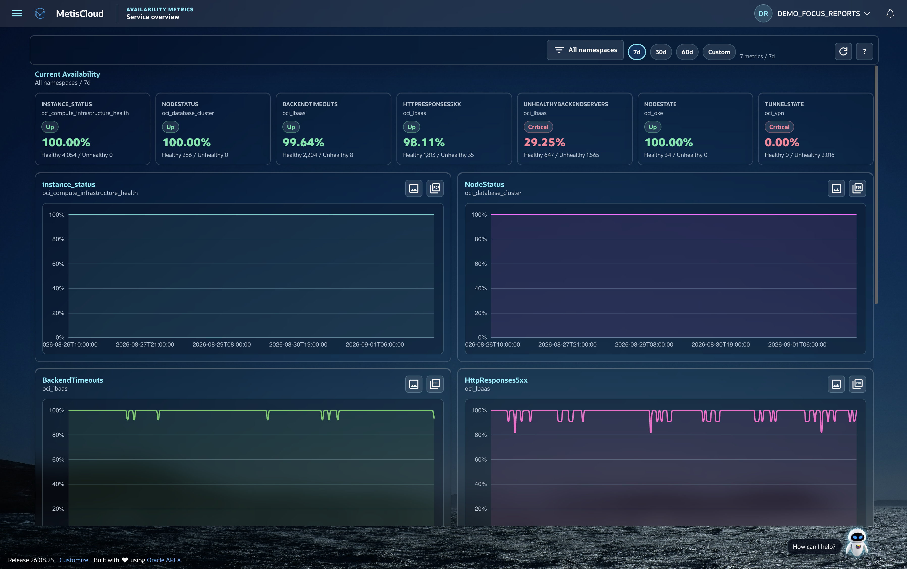
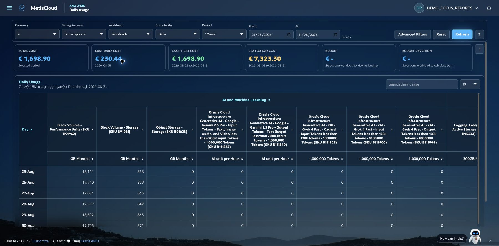

Oracle Cloud. A clearer perspective.
See your cloud
clearly.
Costs. Workloads. Resources.
One place to see how it all comes together.

The bigger picture.
Every useful detail.
MetisCloud brings your Oracle Cloud costs, usage and resources into one application. Follow a spending change. Understand a workload. See where your credits are going. With the context to take the next step.
Follow your spend.
Bring costs, subscription credits, forecasts and workload budgets into the same conversation.
Know your estate.
Explore resource inventory, tags, compartment hierarchies and collected resource relationships.
Keep your perspective.
Save reporting views, export results and give people access to their assigned workloads.
Cost & usage analysis
Find the story
behind the spend.
Go from a broad trend to the service, compartment or workload behind it. Compare periods, explore daily usage and take your findings with you.
Explore cost analysis
Metis Bot · Optional AI
A question.
A new perspective.
Explore approved datasets in everyday language. Optional OCI Generative AI features bring conversational analysis and help into your workflow.
Meet Metis Bot
Availability metrics
Keep availability
in view.
Review collected metrics and timelines with visibility into coverage and data freshness.
Explore availability
Daily usage
Go beyond cost.
Understand usage.
Explore consumption by service and SKU. Keep quantities and units together for meaningful comparisons.
Explore daily usage
See it in action
The picture comes together.
A tour of the dashboards, analysis, Metis Bot and OCI tools that bring your cloud into focus.
4 minutes 50 seconds · September 2026 · Approved demo data
Read the written product guide · Open the video
Your cloud. Your environment.
A clearer view starts here.
Install MetisCloud in your Oracle Autonomous Database with managed APEX. Start with the guides, then make it your own.
Source available under the PolyForm Noncommercial License 1.0.0. Commercial-use rights are not included. Read the license.